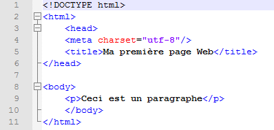

l'L'HyperText Markup Language, HTML, désigne un type de langage informatique descriptif. Il s'agit plus précisément d'un format de données utilisé dans l'univers d'Internet pour la mise en forme des pages Web. Il permet, entre autres, d'écrire de l'hypertexte, mais aussi d'introduire des ressources multimédias dans un contenu. Développé par le W3C (World Wide Web Consortium) et le WHATWG (Web Hypertext Application Technology Working Group), le format ou langage HTML est apparu dans les années 1990. Il a progressivement subi des modifications et propose depuis 2014 une version HTML5 plus aboutie.
L'HTML est ce qui permet à un créateur de sites Web de gérer la manière dont le contenu de ses pages Web va s'afficher sur un écran, via le navigateur. Il repose sur un système de balises permettant de titrer, sous-titrer, mettre en gras, etc., du texte et d'introduire des éléments interactifs comme des images, des liens, des vidéos... L'HTML est plus facilement compris des robots de crawl des moteurs de recherche que le language JavaScript, aussi utilisé pour rendre les pages plus interactives.
pour plus d'informations sur HTML veuillez clique ici
voici un exemple
